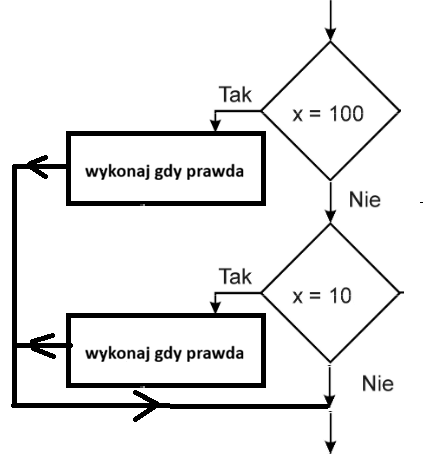
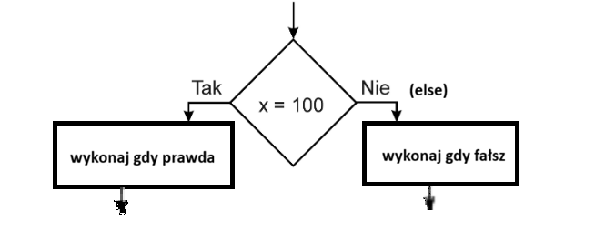

<!DOCTYPE html> <html lang="pl"> <head> <meta charset="UTF-8"> <meta name="viewport" content="width=device-width, initial-scale=1.0"> <title>Voloshchuk Z34_html</title> </head> <body> <p><b>Pytania:</b> <br> 1) <b>Instrukcja wyboru</b> -> składania teoretyczna. <br> <textarea name="siejka" cols="90" rows="8" readonly> if (warunek_logiczny1) { // instrukcje jeśli warunek_logiczny1 prawdziwy } if (warunek_logiczny2) { // instrukcje jeśli warunek_logiczny2 prawdziwy }
2)
Instrukcja wyboru
-> schemat blokowy.

3)
Instrukcja alternatywy
-> składania teoretyczna.
if (warunek_logiczny) { // instrukcje jeśli warunek_logiczny prawdziwy } else { // instrukcje jeśli warunek_logiczny fałszywy }
4)
Instrukcja alternatywy
-> schemat blokowy.

5)
Operatory porównania.
Operator Opis Przykład == jest równe 2==3 wynik->fałsz != nie jest równe 2!=3 wyni->prawda > jest większe 25>3 wynik->prawda < jest mniejsze 2<3 wynik->prawda >= większe lub równe 25>=3 wynik->prawda <= mniejsze lub równe 2<=3 wynik->prawda
6)
Uwaga do operatorów porównania.
Należy odróżnić == ( dwa razy ) od = (jeden raz)
== ( dwa razy ) -> instrukcja PORÓWNANIA
= (jeden raz) -> instrukcja PRZYPISANIA np. a=5;
7)
Operatory logiczne.
Operator Opis Przykład && i x=3 y=4 (x < 9 && y > 2) wynikprawda || lub x=3 y=4 (x==8 || y==6) wynikfałsz ! zaprzeczenie x=3 y=4 !(x==y) wynikprawda